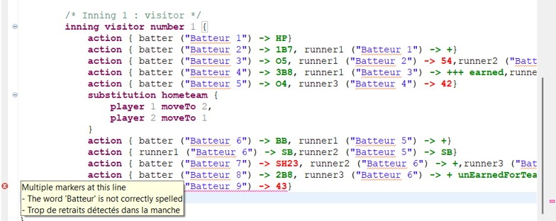

Les erreurs et les incohérences sont signalées pendant la saisie, par un soulignement dans l’éditeur, un marqueur dans la marge et un message explicite. L’utilisateur corrige immédiatement, sans attendre la fin du match.

Lorsqu’une erreur est détectée, une croix rouge apparaît dans la marge de l’éditeur : en positionnant le curseur de la souris dessus, on affiche la liste des erreurs de la ligne. Les traits rouges situés à droite, dans la règle de l’éditeur, repèrent l’emplacement des erreurs sur l’ensemble du document et permettent d’y accéder directement d’un simple clic.